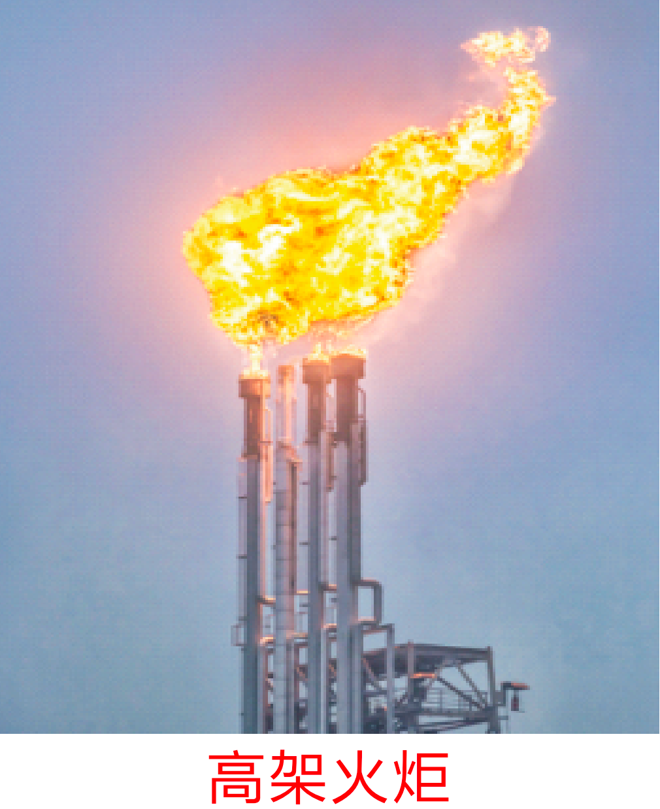
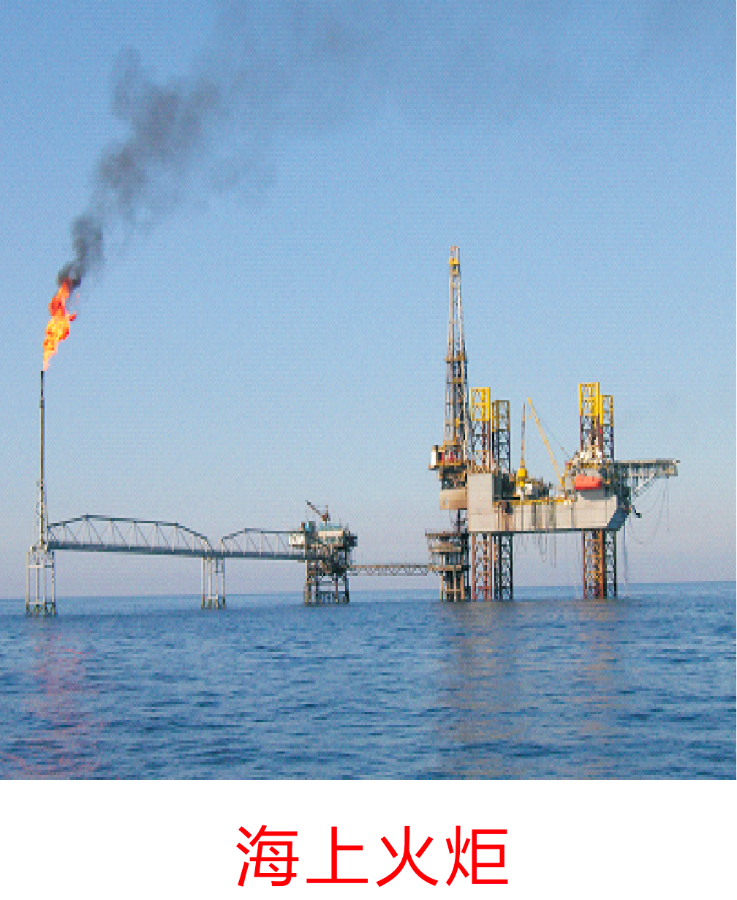
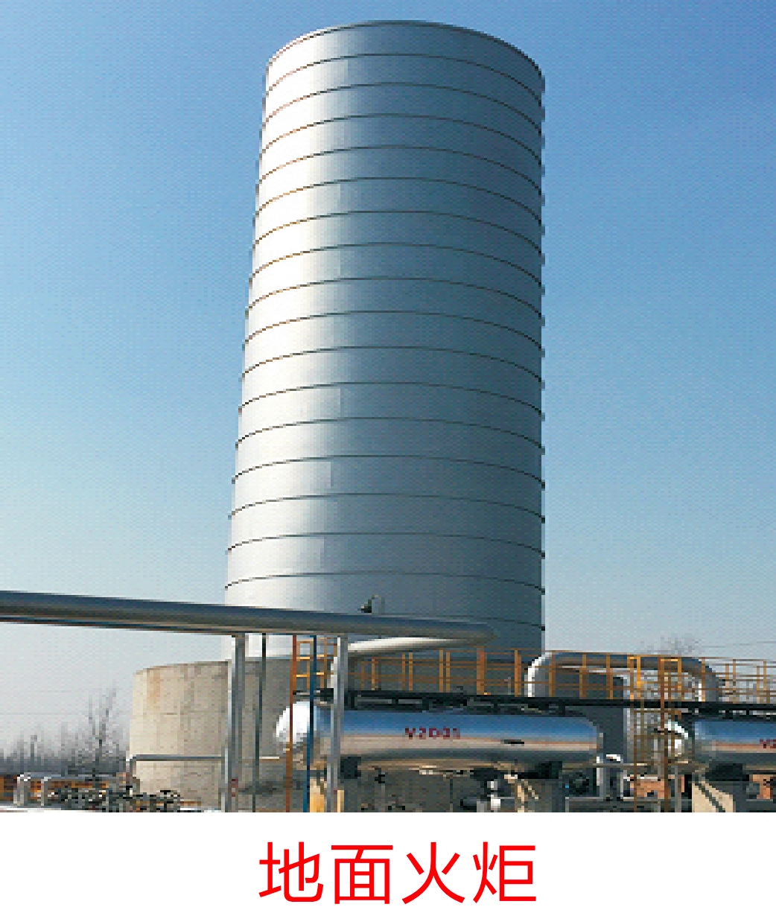
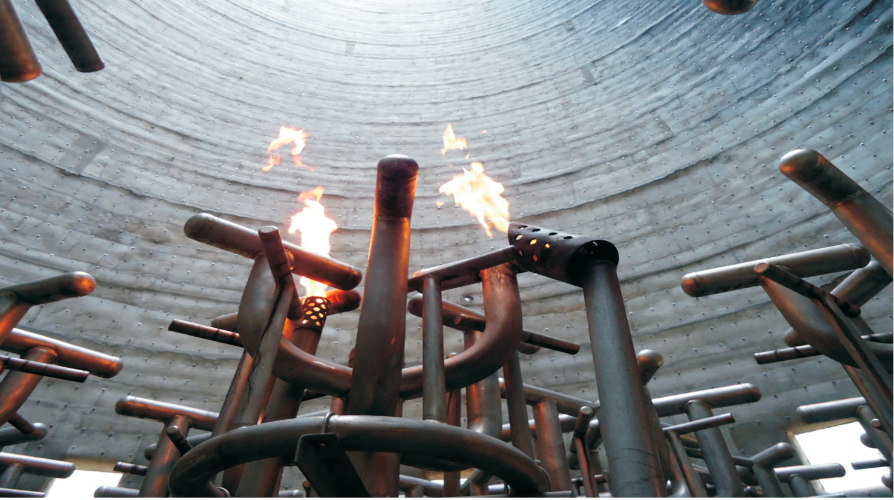
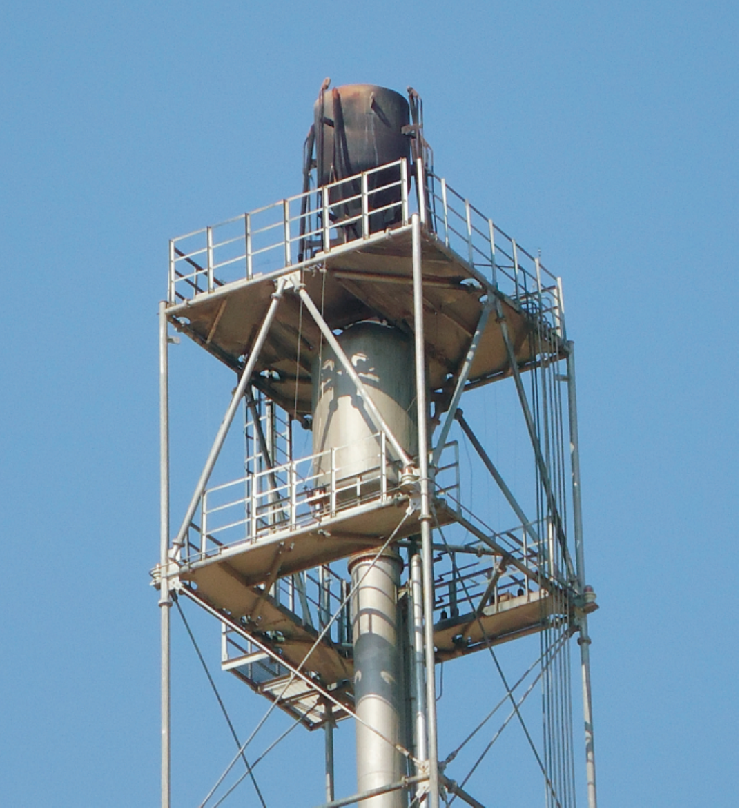
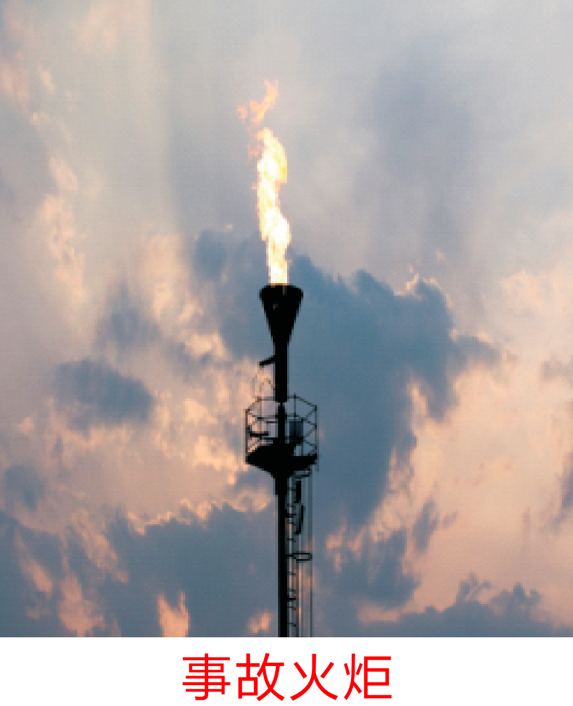

高空点火器

ZL-JTS- 阶梯式高空点火器
阶梯式高空点火器，310S+304S材质，耐温-40~1250°C，适用于30~185米高架火炬，抗风能力≥12级。
查看产品详情 →

ZL-YT-DHQ-I 燃烧器一体化点火器
一体化设计，适用于锅炉及各类燃烧器；高低压自适应输入，安装简便，点火可靠。
查看产品详情 →
长明灯系列

ZL-HBJ-I 双风线节能环保长明灯
文丘里引射原理，火焰可调至粉蓝色；双重点火保障；中国神华实测节能93.5%，耗气量从37.65降至2.45Nm³/h。
查看产品详情 →

ZL-SCM-I 组合式一体化点火长明灯
组合式一体化点火长明灯，双重点火保障，兼具长明灯与点火器功能，适用于60~150米高架火炬。
查看产品详情 →

ZL-SCM-II 组合式一体化点火长明灯
在ZL-SCM-I基础上配置防堵备用分支喷咀，适合对连续火种可靠性要求更高的火炬工况。
查看产品详情 →

ZL-HB- 环保节能长明灯
利用文丘里效应，燃料气高速流经缩径段形成负压，自动吸入空气预混；双配风设计，火焰可调至粉蓝色。中国神华实测节能93.5%。
查看产品详情 →

防爆高压发生器


ZL-GY-II 增安型防爆高压发生器
增安型防爆，适用于工厂用II区T1-T6组爆炸性混合物危险场所；长寿命设计，安全可靠。
查看产品详情 →
地面点火装置 & 火焰监测器

ZL-DMB-C 地面爆燃点火器
地面爆燃点火器，气源压力0.03~0.4MPa，304S材质，能耗0.5~2Nm³/h，适用于185米以下高架火炬及地面火炬。
查看产品详情 →


ZL-ZWTC 紫外火焰监测器
紫外火焰监测器，检测范围覆盖炉膛、火炬，输出干接点和模拟量4-20mA，防护等级IP66。
查看产品详情 →
绝缘子与核心配件


ZL-GLX-II 高压裸线
高温合金材质，可经受火炬上部800°C-1200°C高温、火雨等恶劣工况；用于高空点火电极与高压发生器间的电能传输。
查看产品详情 →
火炬系统定制
我公司具备各类火炬系统的全套设计、制造、安装、调试能力，可根据用户提供的火炬参数（排放量、气体组分、背压、高度等）进行非标定制。以下为部分火炬系统类型实拍：
高架火炬

高架火炬
60~150m塔架式，适用于石化/煤化/炼化企业连续或紧急排放燃烧。

海上平台火炬
适用于海洋石油平台，耐盐雾腐蚀，紧凑型结构设计。
地面火炬

地面火炬（封闭式）
无烟燃烧，热辐射小，适用于厂区周边有环境敏感目标的工况。

地面火炬内部结构
多级燃烧器排列，分级燃烧控制，确保燃尽率≥99%。
火炬燃烧器（火炬头）

火炬燃烧器（一）
多孔蒸汽助燃型，适用于高架火炬无烟燃烧。

火炬燃烧器（二）
空气助燃型，低噪音设计，适用于中小排量火炬。

火炬燃烧器（三）
耐高温合金材质，可承受1200°C持续燃烧工况。
特殊火炬

煤气火炬
适用于焦炉煤气、高炉煤气等低热值气体燃烧排放。

酸性气火炬
耐H₂S/SO₂腐蚀，310S+哈氏合金材质可选，适用于含硫气体燃烧。

事故火炬
大排量紧急放空，瞬间处理能力可达1000t/h以上。

氢氰酸火炬燃烧器
特殊耐腐蚀设计，适用于丙烯腈/氢氰酸等化工装置尾气处理。
系统组成说明
排放系统
管廊 → 水气分离罐 → 水封罐 → 塔架 → 筒体 → 阻火器 → 燃烧器（火炬头）
点火系统
长明灯 → 高空点火器（电极→绝缘子→裸线→端子→发生器→控制箱）→ 地面点火器
仪表系统
热电偶 → 紫外/红外探测器 → 压力变送器 → 流量计 → DCS/SIS控制系统
需要定制火炬系统方案？请致电 0393-5389080 或 在线留言，提供火炬排放参数，24小时内出具初步方案。
产品对比速查表
以下对比表帮助快速选择适合您工况的产品：
| 产品型号 | 类别 | 适用场景 | 关键参数 | 专利/认证 |
|---|---|---|---|---|
| ZL-JTS- | 阶梯式高空点火器 | 30~185m高架火炬 | 气源1.0-0.6MPa | 能耗1.5~8Nm³/h | -40~1250°C | 抗风≥12级 | 图册参数 |
| ZL-YT-DHQ-I | 一体化点火器 | 锅炉/燃烧器 | 输入24-220V | 输出7.5-11KV | 天然气/液化气/煤气 | ZL 2022 2 2686852.3 |
| ZL-HBJ-I | 双风线长明灯 | 多类火炬长明火工况 | 耗气4~16Nm³/h | 供气0.05~0.6MPa | 抗风≥12级 | ZL 2020 2 2537666.4 |
| ZL-SCM-I/II | 组合式一体化长明灯 | 60~150m高架火炬 | 气源0.1~0.6MPa | 耗气1.5~60Nm³/h | SCM-II配备防堵备用分支喷咀 | 图册参数 |
| ZL-HB- | 环保节能长明灯 | 大型火炬节能改造首选 | 耗气1.5~8Nm³/h | 实测2.45 | 节能93.5% | 文丘里引射专利技术 |
| ZL-JN-III | 节能长明灯（配件/补充） | 不同规模火炬灵活适配 | 耗气1.5~36Nm³/h可选 | 多规格可选 |
| ZL-GN-50 | 防爆高能发生器 | 120~185m高架火炬 | 输入220V | 输出5000V | 图册参数 |
| ZL-GN-25 | 防爆高能发生器 | 120m以下高架火炬/地面火炬/地面点火器 | 输入220V | 输出2500V | 图册参数 |
| ZL-GY-II | 增安型防爆高压发生器 | 2区爆炸性气体环境 | ExeIIT6 | 7.5KV | 输入220V | 输出40mA | 国家防爆认证 |
| ZL-DMB-C | 地面爆燃点火器 | 185米以下高架火炬及地面火炬 | 气源0.03-0.4MPa | 304S | 耐温-40~900°C | 能耗0.5~2Nm³/h | 图册参数 |
| ZL-GY-DHQ-I | 高能高压点火杆 | 锅炉/工业炉窑 | 输入24-220V | 输出2.5-11KV | ZL 2022 2 2686854.2 |
| ZL-ZWTC | 紫外火焰监测器 | 炉膛/火炬 | 220VAC-220VDC | 干接点+4-20mA | -40~70°C | IP66 | 图册参数 |
| ZL-DSY/ZLDS系列 | 石英绝缘子 | 电极绝缘/支撑 | ZL-DSY-I/II/IV、ZLDS-III-I | 耐压30KV | -50~1350°C | 图册参数 |
| ZL-GLX-II | 高压裸线（配件/补充） | 高空点火电极输电 | 耐压30KV | -40~1250°C | 高温合金 |
| 防爆热电偶 | 温度传感器（配件/补充） | 长明灯火焰监测/DCS联动 | 310S保护管 | ≥1.5m | 卡套式固定 |
如需定制选型方案，请致电 0393-5389080 或 在线留言，提供火炬图纸和运行参数，24小时内回复。